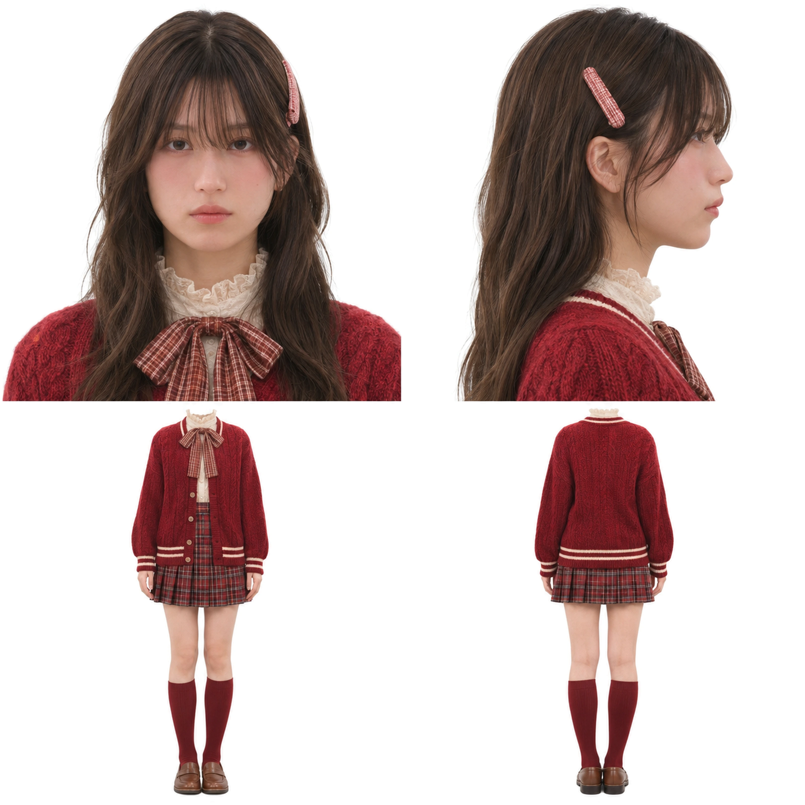
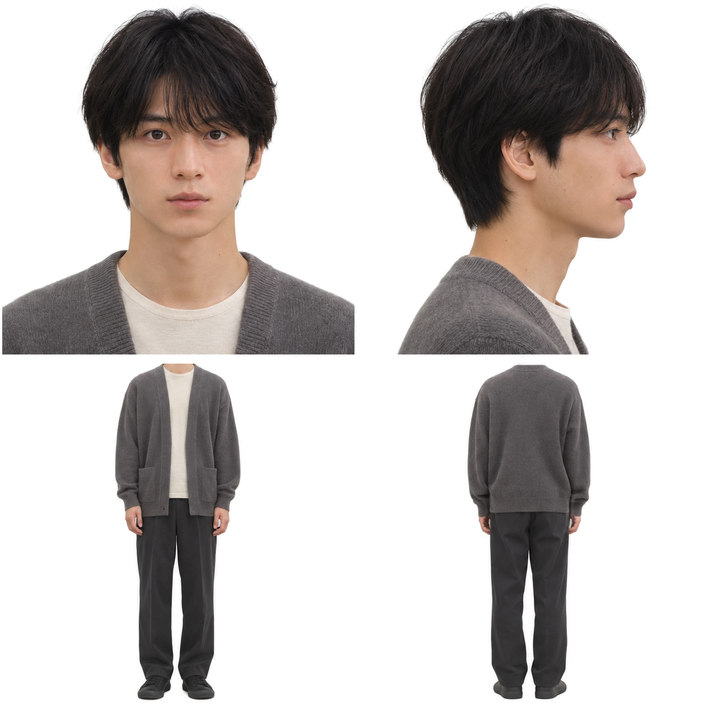
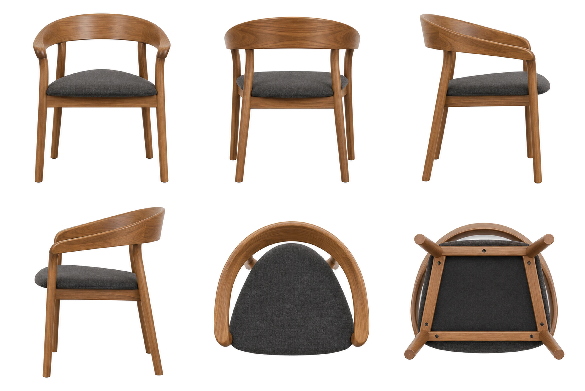
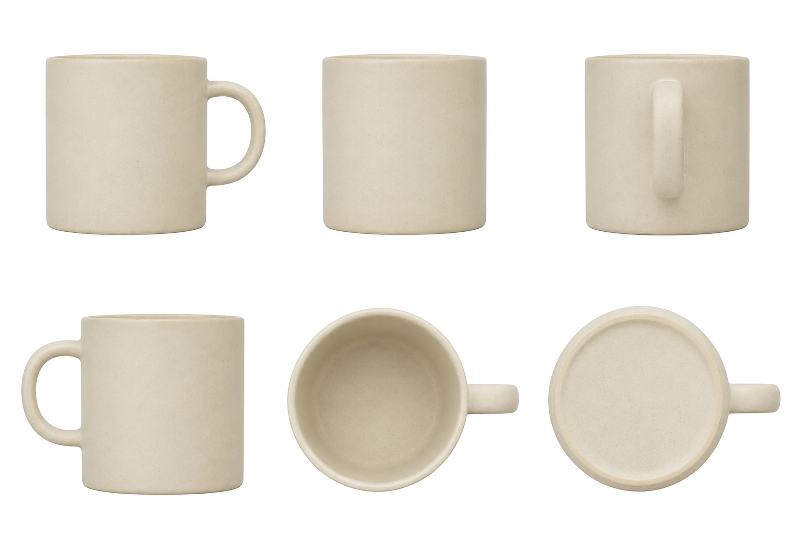
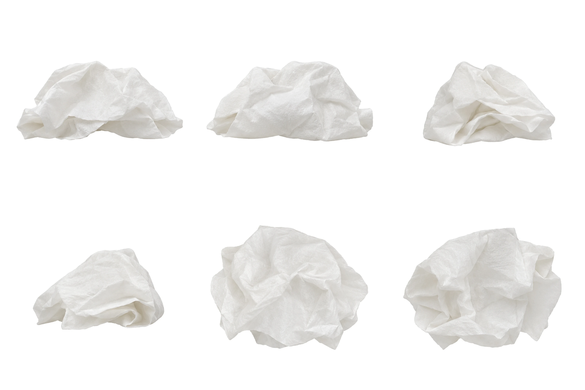

环大陆地区短剧
环大陆地区短剧 · 二集
正在连接在线视频…
视频简介
咖啡馆里的谈话继续。男生起初用夸大的手势解释，渐渐放下玩笑说出自己的顾虑。女生从惊讶转为笑，举手示意自己也有话要说。误会一度加深，两人最后重新找到同一个话题，在笑意中结束。
在快手观看原视频 ↗制作资产
角色资产

红衣女生
赴约坐到落地窗旁，先以克制表情观察男生，随后露出笑意。 红色针织开衫、奶油色荷叶领、红格蝴蝶结与格裙，粉色发夹固定在同侧。 成片未完整展示的方位按可见造型补全。

灰衣男生
在桌边试图把想法说清楚，越解释越紧张，后半段明显脸红。 灰针织开衫配白圆领和炭色裤。腮红为后半段表演妆，保持同一人物。 成片未完整展示的方位按可见造型补全。
场景资产

落地窗咖啡馆
落地窗咖啡馆的场景视觉设定，用于空间布局、光影与镜头背景。
道具资产

实木圆餐桌
蜜棕圆桌面，黑金属单柱脚。 放在两位主角之间，机位绕桌切换。 成片未完整展示的方位按可见造型补全。

曲背咖啡椅
浅核桃靠扶手一体，深灰软坐垫，四木腿。 两把椅子面对面，保证远景座位连续。 成片未完整展示的方位按可见造型补全。

透明杯与水
一只重底短透明水杯，半满。 放男生手边，他在开口前低头抓住杯身。 成片未完整展示的方位按可见造型补全。

米白直筒马克杯
米白哑光陶瓷短筒杯带把。 放女生近手侧，与白色花瓶在同一构图。 成片未完整展示的方位按可见造型补全。

白花玻璃小瓶
透明收口瓶与短枝小白花。 桌面中线定位，正反打保持花束朝向。 成片未完整展示的方位按可见造型补全。

粉色发夹
细长粉色夹，表面略有槽纹。 女生发侧识别，近景不更换位置。 成片未完整展示的方位按可见造型补全。

白色纸巾
卷曲折叠的小白纸巾。 男生反复松手和靠近纸巾，带出紧张状态。 成片未完整展示的方位按可见造型补全。
剧本与分镜
完整剧本与分镜脚本
环大陆地区短剧 · 二集 原片时长 126.94 秒 故事梗概 咖啡馆里的谈话继续。男生起初用夸大的手势解释，渐渐放下玩笑说出自己的顾虑。女生从惊讶转为笑，举手示意自己也有话要说。误会一度加深，两人最后重新找到同一个话题，在笑意中结束。 人物 红衣女生和灰衣男生延续前集人物造型，表情由试探转为轻松。远处顾客保持背景虚焦。 场景 落地窗咖啡馆沿用前集布局。男生面对吧台侧机位、女生面向城市窗景反打，切近景前先以桌面重建轴线。 道具用途 水杯、马克杯、纸巾及花瓶延续同一位置。粉发夹贯穿女生正侧近景，桌椅用于建立双方距离。 剧本与分镜 按原片抽帧重建的复拍制作稿。画面未能确认的对白、音效与镜头节奏按下表执行。 | 镜号 | 画面内容 | 镜头视角 | 使用资产 | 动作描述 | 台词/旁白 | 音效 | 单镜头时长 | | 01 | 男生向上摊开双手 | 女生肩后的中景 | 灰衣男生、红衣女生、落地窗咖啡馆、实木圆餐桌 | 先举双手，随后压到桌边，急于说明 | 男生：等一下，你先别猜。 | 衣袖、咖啡馆环境 | 6.00秒 | | 02 | 男生露笑，女生坐稳细听 | 双向近景 | 红衣女生、灰衣男生、白花玻璃小瓶 | 女生握住马克杯，眼神始终在对方身上 | 女生：好，你说。 | 杯底轻响 | 7.00秒 | | 03 | 他把事情分成两部分解释 | 斜侧过肩中景 | 灰衣男生、透明杯与水、白色纸巾 | 两手张开，做出先后顺序 | 男生：其实我想说的有两件事。 | 纸巾摩擦 | 9.00秒 | | 04 | 女生听出笑点，没马上打断 | 女方中景推近 | 红衣女生、粉色发夹、米白直筒马克杯 | 她笑一下后停住，仍看着他 | 女生：第二件呢？ | 轻笑 | 9.00秒 | | 05 | 男生把手放到纸巾上，脸开始红 | 吧台背景中景 | 灰衣男生、白色纸巾、透明杯与水 | 纸巾被按住，眼睛垂向桌面 | 男生：第二件，我本来打算晚一点说。 | 短暂停顿 | 10.00秒 | | 06 | 女生听到意外一句 | 脸部正反打 | 两位主角 | 男生放低声量，女生睁大眼睛 | 男生：我一直想和你再见一面。 | 环境底音稍降 | 11.00秒 | | 07 | 女生终于笑出来 | 女方正面近景 | 红衣女生、粉色发夹 | 肩膀放松，笑声逐渐变清楚 | 女生：你刚才铺垫这么久，就为了这句话？ | 轻笑、杯盘远声 | 14.00秒 | | 08 | 她把杯放好，举手数给男生听 | 窗前中近景 | 红衣女生、马克杯、花瓶、桌椅 | 先竖两指，再换手势，逗他等回答 | 女生：那我也有两件事。第一，我听懂了。 | 杯把轻触 | 17.00秒 | | 09 | 女生再抬手，男生紧张追问 | 快节奏反打 | 两位主角 | 女生留出停顿，男生向前一探 | 男生：那第二呢？ | 急促呼吸 | 11.00秒 | | 10 | 男生急着澄清，女生先用眼神确认 | 双人中景与女生近景交替 | 两位主角、白色纸巾 | 男生抬手又放下，女生等他说完 | 女生：第二，你下次可以直接约我。 | 短留白后轻节拍 | 13.00秒 | | 11 | 他们都朝对方微笑 | 窗侧过肩接女生特写 | 两位主角、落地窗咖啡馆 | 女生垂眼笑，男生终于松肩 | — | 咖啡馆底声回升 | 12.00秒 | | 12 | 男生带笑答应 | 男方正面近景 | 灰衣男生、透明杯与水 | 抬眼看向女生，在笑声前切出 | 男生：好，下次我直接问。 | 音乐尾音 | 7.94秒 | 时长合计 126.94 秒